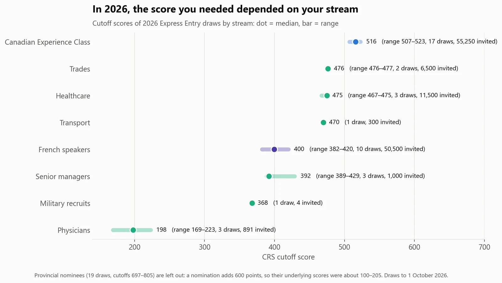
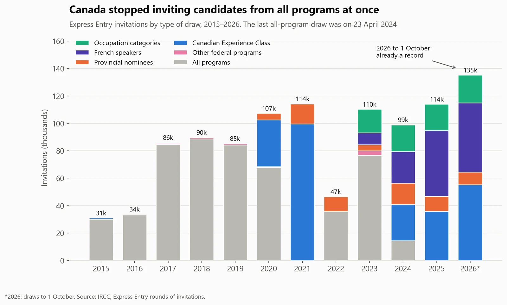
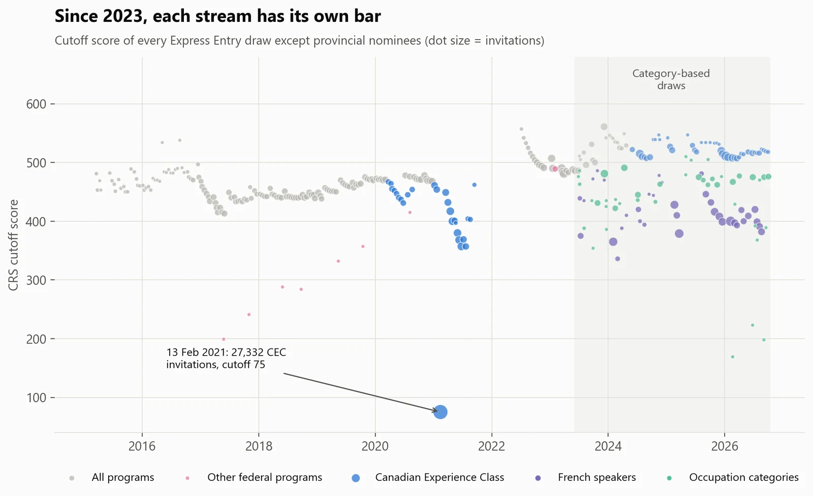
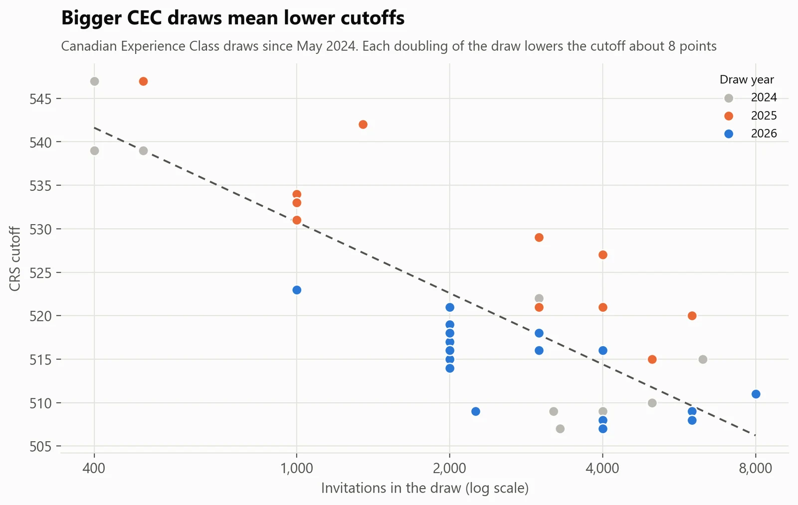
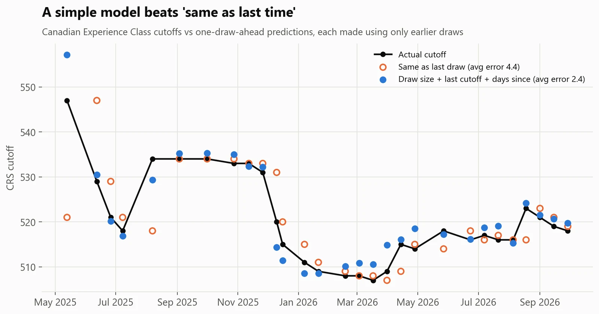

Immigration · Canada
Express Entry in 2026: your stream matters more than your score
- Business question
- What CRS score does a candidate need for Canadian PR in 2026?
- Key finding
- It depends on the stream, not just the score: 2026 cutoffs ran from 169 for physicians to 523 for the Canadian Experience Class, and French speakers needed about 400. There hasn't been an all-program draw since April 2024.
- Recommendation
- Category eligibility matters more than a few extra points: 2026 category cutoffs were 40–120 points below the CEC's. And once a draw's size is announced, its cutoff can be estimated within a few points.
- Estimated impact
- 2.4 ptsAverage error predicting the next CEC cutoff, against 4.4 for 'same as last time' (29 draws, rolling backtest).
- Data
- All 448 Express Entry draws, January 2015 to 1 October 2026, plus the pool's score distribution (IRCC)
- Methods
- SQL modelling, data-quality checks, regression forecasting with a rolling backtest
- Tools
- SQL (DuckDB), Python: pandas, statsmodels
Results





How I did it
- Downloaded IRCC's full draw history (the data behind its rounds-of-invitations page) and mapped 22 draw names, which change almost every year, to 15 streams.
- Decoded the pool's 18 unlabelled distribution fields into CRS score bands and built the analysis tables in SQL.
- Wrote 11 data-quality checks. One caught an error in IRCC's own table: in draw 247 (April 2023) the 10-point score bands add up to 180 fewer candidates than their total, which looks like a transposed digit.
- Compared six forecasting approaches with a rolling backtest (each draw predicted only from earlier draws), and reported prediction intervals for the next draw.
What could make this wrong
- The forecast needs the draw size, which IRCC announces with the draw: it answers 'what if', not 'when'.
- 42 CEC draws is a small sample, and policy changes can move cutoffs in ways history can't predict.
- This is an analysis of public data, not immigration advice.
What I learned
- Government data changes shape: 22 draw names for 15 streams needed a proper mapping layer.
- Always backtest. The model that looked best in-sample (with the pool size) was worse on draws it hadn't seen.
- Official data has errors too: one of IRCC's own tables contains what looks like a transposed digit.
What I'd do next
- Forecast draw sizes as well, using the immigration levels plan.
- Publish an updating cutoff tracker after each draw.
- Model category draws once there are enough of them.